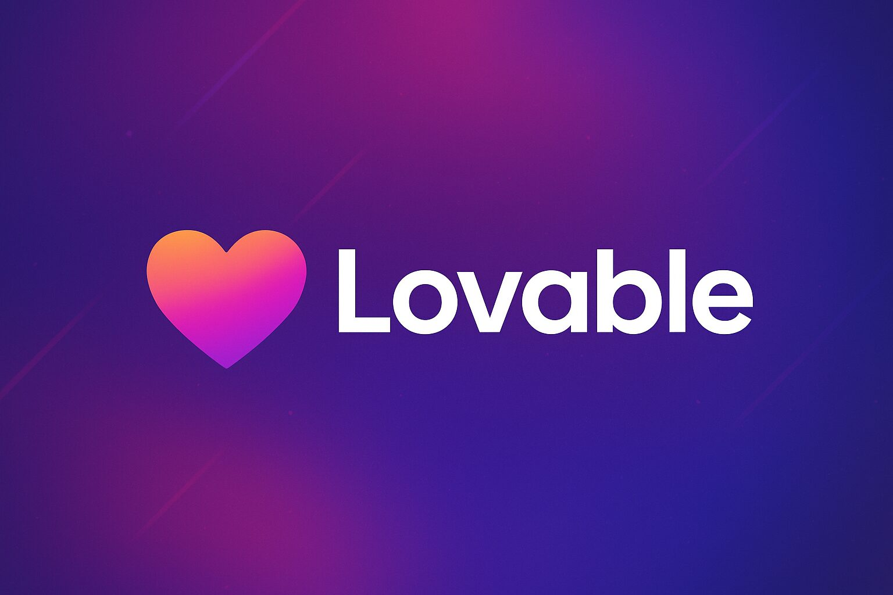

IA/WebSoldier
Site web d'auto-motivation assisté par IA. Système de récompenses quantifiées, gamification progressive et analytics détaillées pour valoriser vos efforts et suivre votre progression.
2024-2025
En production
Perso
Lovable AI
React
API REST
Analytics
Gamification
- Génération de récompenses par IA
- Quantification des efforts et des progès
- Panel d'outils d'analyse statistique
- Système de badges et achievements
- Suivi des performances en temps réel